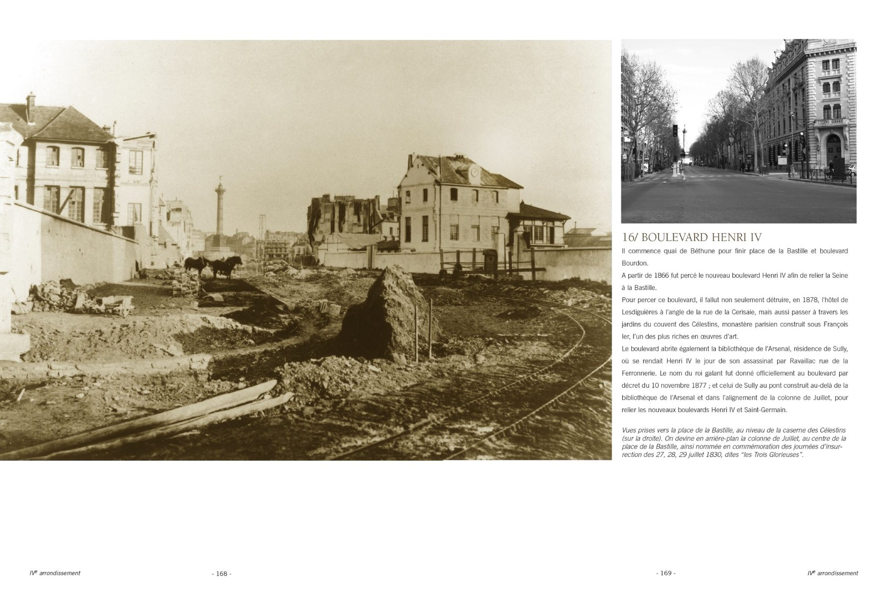
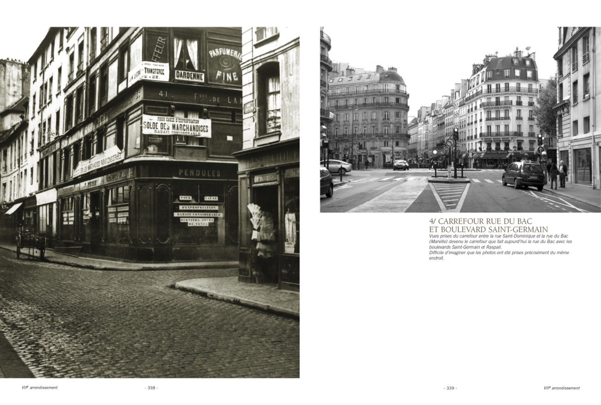
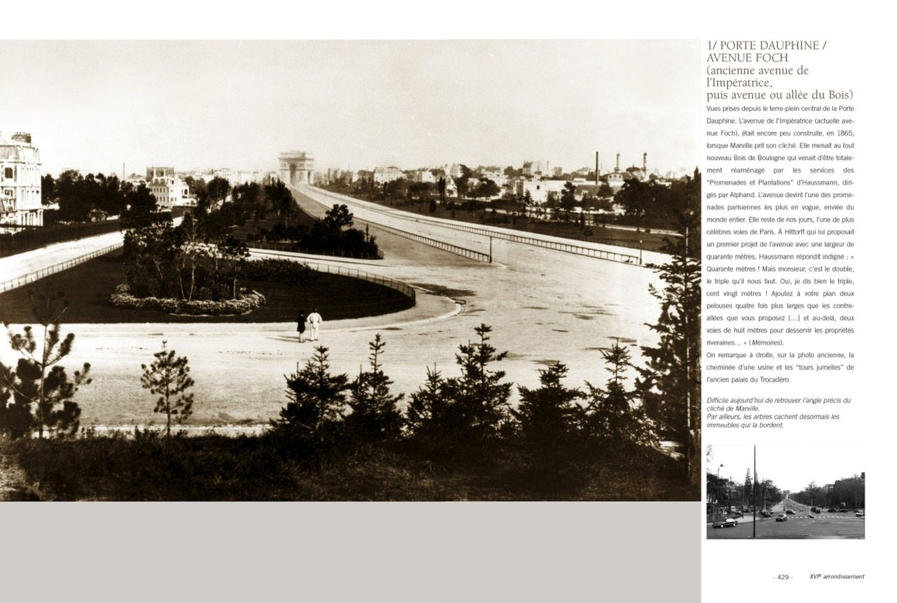
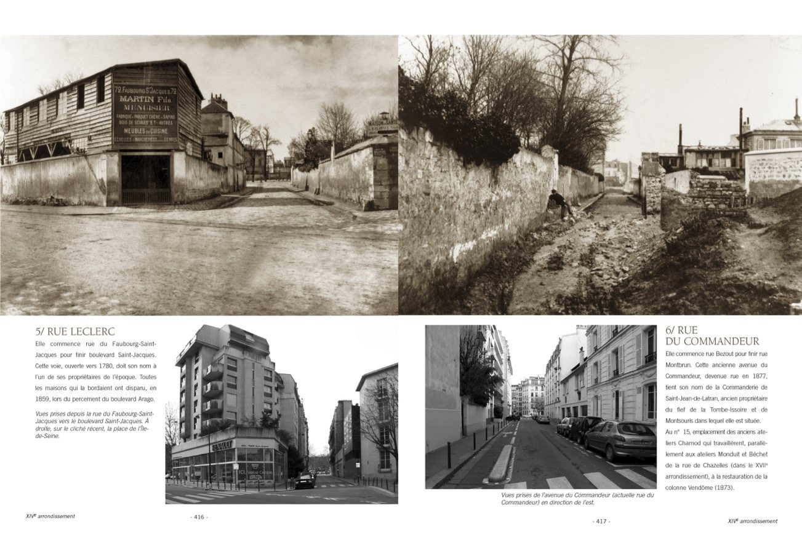

Paris avant-après Haussmann.
Un document historique qui fera date. En 1860, Haussmann charge Charles Marville de photographier ce qui va disparaître. Près de 170 ans plus tard, le Studio Traktir a photographié pendant deux ans les mêmes lieux, depuis l’endroit exact où Marville avait posé son appareil.
- 640photographies : 320 de Marville, 320 d’aujourd’hui
- 100+plans comparatifs
- 520pages · parution décembre 2026

Paris avant Haussmann, et tel qu’il est devenu.
1860 — Haussmann charge le photographe Charles Marville de photographier ce qui devait être détruit au cours de la transformation de Paris.
2026 — Près de 170 ans plus tard, le Studio Traktir photographie pendant deux années les mêmes lieux, de l’endroit exact d’où Marville avait pris ses clichés, précisé dans ses notes conservées à la Bibliothèque historique de la Ville de Paris.
Le livre — Les Éditions du Mécène rééditent l’ouvrage de cette comparaison de Paris avant Haussmann et tel qu’il est devenu aujourd’hui. 320 légendes expliquent la transformation de Paris depuis le Second Empire, et son histoire.
Les mêmes lieux, à 170 ans d’écart.
Chaque double page confronte un cliché de Marville et la vue d’aujourd’hui, prise au même endroit. Quelques-uns des lieux du livre :
- Le Louvrep. 32-33
- Rue Réaumurp. 126-127
- Bastillep. 168-169
- Carrefour du Bacp. 338-339
- Rond-point des Champs-Élyséesp. 360-361
- 14e arrondissementp. 416-417
- Avenue Fochp. 428-429
- Buttes-Chaumontp. 446-447
- Colonne Vendômep. 458-459
Feuilletez le livre.




Une première exposition à l’Académie d’Architecture
En 2011, l’Académie d’Architecture, place des Vosges, a présenté ce face-à-face entre le Paris de Marville et le Paris d’aujourd’hui, avec le soutien de BNP Paribas Real Estate. Commissaire : Patrice de Moncan, historien de Paris, prix Haussmann et prix Charles Garnier de la Société de Géographie.
Le cadeau qu’on garde.
Offrez Paris avant-après Haussmann à vos clients et partenaires, personnalisé à vos couleurs : votre logo en couverture, une préface de votre président, des exemplaires numérotés. À partir de 500 exemplaires.
- Vous choisissez le nombre d’exemplaires
- Vous nous envoyez votre logo et votre texte
- Vous validez le bon à tirer
- Nous imprimons et livrons
Recevez Paris avant-après Haussmann.
Laissez-nous vos coordonnées : nous vous répondons sous 48 heures avec le prix, le délai de livraison et, pour les entreprises, une proposition de personnalisation.
Ou appelez-nous : 06 81 27 78 60